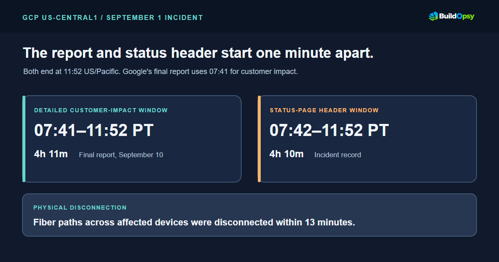
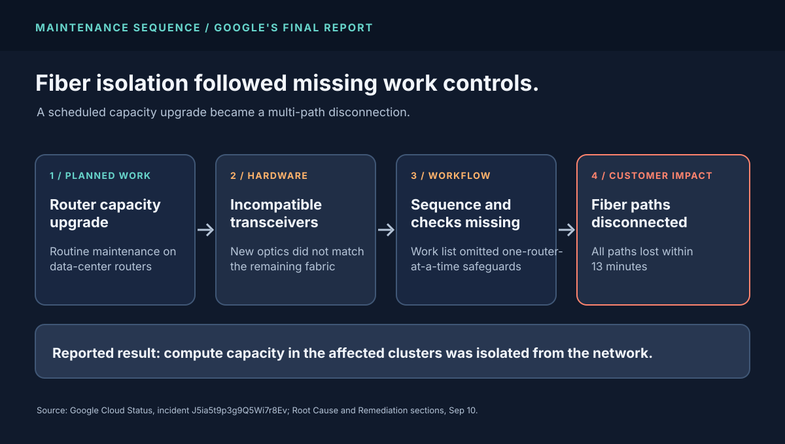

1. What Google's report establishes
On September 1, a scheduled capacity upgrade replaced optical transceivers on network routers supporting parts of us-central1-b and us-central1-f. The replacement transceivers were incompatible with equipment remaining in the network fabric. A manually orchestrated work list omitted the required one-router-at-a-time sequence and the normal human and software verification steps. Fiber paths were disconnected across the affected devices within 13 minutes.
The loss isolated compute capacity from the network. Virtual machines in the affected clusters could not reach external resources, nor could outside clients reach those machines. This was a physical connectivity failure. Google's report does not attribute the event to a slow disk, a regional control-plane queue or a measured retry storm.
2. Scope: affected clusters, not a whole region
The incident affected specific clusters in parts of two zones. Google says many multi-zonal deployments using capacity in unaffected zones largely continued serving. Regional products that depended on workloads in the affected clusters still saw symptoms, so a zone label alone did not describe every customer's blast radius.
The September 29 addendum adds important detail: traffic diversion reduced the impact to regional products, while Cloud Run and App Engine saw a later thundering herd as workloads initialized on replacement capacity. GKE control-plane requests also experienced errors and delays. Those are reported outcomes. They do not establish the invented per-minute queue and retry counts previously shown here.

3. Timeline from the primary report
- 07:41 US/Pacific: Google's report marks the start of customer impact.
- 07:45 and 08:00: traffic diversion actions began to reduce regional impact.
- 08:50: most physical connections had been restored and traffic began recovering.
- 09:19: diversion actions were removed as network capacity recovered.
- 11:52: Google confirmed recovery across nearly all affected services and long-running operations.
Google's final report calls 07:41–11:52 the customer-impact interval (4 hours 11 minutes). The incident-page header instead records 07:42–11:52 (4 hours 10 minutes). Both times are US/Pacific; the public report does not explain the one-minute difference. Individual products and workloads had different impact periods.
4. Resilience lessons supported by the evidence
Sequence hazardous work in the tooling. The report says the procedure intended one router at a time, but the work list did not carry that instruction. Encode ordering constraints in the workflow rather than relying on an operator to infer them from a long list.
Require independent confirmation. The final report describes missing human and software checks and a standing stop-work procedure that was not followed. A safe workflow should pause when a live signal remains on a cable after disconnection, require a second confirmation and make the next step unavailable until checks pass.
Automate traffic diversion with a bounded blast radius. Google says diversion took about 19 minutes in this event and describes a target near five minutes for its automated system. That is Google's stated remediation target, not a measured result. Applications should still tolerate partial network isolation with explicit timeouts, bounded retries and gradual traffic shifts.
Test recovery behavior, not only replica placement. Rehearse how services discover healthy capacity, how retries behave during packet loss and how cold caches respond when traffic shifts. The report documents a thundering herd after restoration. It does not publish request-rate measurements, so any load test should use your own service telemetry.
5. The verdict: make maintenance stoppable
Google reported that workloads in unaffected zones continued to run. The incident shows how routine maintenance can defeat redundancy when a procedure removes multiple paths before checking the result.
For an infrastructure review, ask for the ordered maintenance plan, the independent signal that blocks the next operation, the stop-work threshold, the traffic-diversion objective and a tested recovery path for workloads that move to cold capacity. A different safety-critical example is NATS's September 2026 incident: its preliminary report says a flight-code defect affected London Area Control, while UK-wide restrictions were used to restart the system and reload data. See the NATS incident review. Measure each against your own environment. Do not turn a provider's incident into a cost estimate without workload and rate-card data.
For comparison, see the separate GCP us-west1 fiber-maintenance and rerouting incident. Both involved regional network capacity, but their reported causes, service impacts and timelines differ.
Frequently Asked Questions
What caused the September 2026 GCP us-central1 outage?
Google's incident report says incompatible optical transceivers were installed during network maintenance. Missing sequencing and verification safeguards allowed fiber paths to be disconnected in parts of us-central1-b and us-central1-f.
How long did the Google Cloud incident last?
Google's final detailed-impact description records 07:41–11:52 US/Pacific, or 4 hours 11 minutes. The status-page header records 07:42–11:52, or 4 hours 10 minutes; the public report does not reconcile the one-minute start-time difference.
Did the outage affect an entire region?
No. Google describes network isolation in specific clusters in parts of two zones. Many multi-zonal deployments continued through unaffected capacity, though dependent regional products also saw symptoms.
What engineering lessons does Google's report support?
Use explicit maintenance sequencing, stop-work checks, automated traffic diversion and rehearsed application behavior during network isolation. Treat stated remediation targets as targets until measured.
Sources and Method
The final incident report was posted September 10, 2026; the September 29 addendum expands the detailed customer-impact description. Google's status header and detailed report retain different start times (07:42 and 07:41), which the public record does not reconcile. Recommendations are engineering analysis based on Google's reported maintenance failure and recovery actions. This revision removes previously published queue, retry and cost figures that had no primary-source support.
- Google Cloud Service Health: September 1 us-central1 network incident, final report and September 29 addendum
- Google Cloud Service Health incident history
- GCP us-west1 outage: scheduled fiber maintenance and failed rerouting
- NATS flight-data incident: a localized software defect and UK-wide restart restrictions